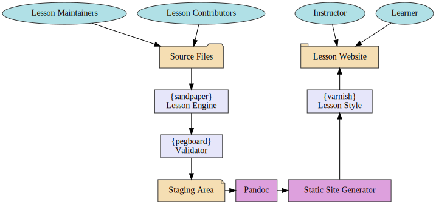
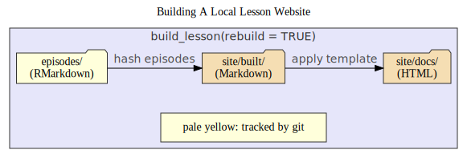
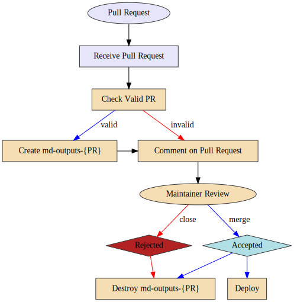

I’ve been investing the vast majority of my time to working on development of the lesson template and am finding now that I have several things that I could work on at the moment, but I needed to take a step back and survey the landscape of our plan for moving forward with the lesson template.
Our lesson maintainers and contributors are all volunteers, which means that they only have a very limited amount of time to work on lessons. The lesson template should be a simple framework for contributors and maintainers to write lessons in a way that maximizes their attention on the lesson content.
The current Jekyll-based lesson template has been showing its age recently and it’s been clear for a while that a refresh is sorely needed. Chief among the issues with the Jekyll template is that it currently requires 4 languages (on top of Git) at a minimum to be installed in order to preview locally: Ruby, Python, Bash, and Make. This setup represents a large barrier for people who are coming in to lesson maintenance for the first time and is clearly an issue when we have to include videos for people to use a github-based workaround to preview their lessons.
Beyond the initial setup for contributors, another pain point is the reliance of the styles inside of the lesson itself and the convoluted manner in which a lesson must be created: it must be imported from the carpentries/styles repository so that the history is preserved and then the maintainer can initialize the lesson. When the time comes to update the lesson, we expect that the maintainer has not touched any of the styling elements or machinery so that the merge happens with no conflicts, but this is rarely the case and we have to initiate the merge and fix conflicts.
When we inspect the process of adding or updating content in a lesson, we find that there are still more places of frustration. The configuration file contains several pieces of information that are necessary for the site, but must never be touched. Moreover, the header yaml of the lesson contains three lists, objectives, keypoints, and questions, all formatted as strings and included in the body of the rendered lesson. The issue with these is that it’s easy for these to become invalid due to misplaced punctuation. Linking to images that lived at the top of the repository was difficult and authoring special block quotes was challenging because writing content always preceded by > proved to be error prone.
With the new lesson template, we strive to clear the template clutter and allow contributors to focus on what is important: lesson content written in clear and easy-to-read markdown. This document will outline the aspects of the new lesson template to describe how it is organized in all aspects including folder structure of a lesson, content specifications for an episode, content specifications for extra-episode files (e.g. references), toolchain landscape, local build requirements, deployment specifications, and internationalization (i18n) specifications.
Notation
This document is intended to be extensive and is targeted for both lesson maintainers and the infrastructure team. Because there are overly-detailed descriptions of the infrastructure that maintainers are not required to know, I will label these points with [i] so that maintainers can skip these sections if needed.
Foundation: Structure of the Lesson Template
This section will discuss the structure of the template in terms of file organization and will not go into the aspects of specific tools.
The new lesson template is not designed to mimic aspects of the previous template. This template is designed primarily for use in The Carpentries, but should theoretically be extensible to other contexts. Most importantly, contributors should only be expected to know markdown and very minimal yaml syntax. in order to contribute to lessons.
Thus, there are a few rules that the new template should follow:
The main branch is the source of truth and should be protected
The style of the lessons should not live in the template
The only committed content should be content directly by the maintainer/contributor and configuration files
Episodes should not depend on the lesson template to be rendered
The generated lesson web page should exist as a stand-alone directory that can be shared offline
Accessibility
With a few exceptions, our lessons have shown to be largely accessible thanks to the reliance on modern frameworks for hosting our lessons. That being said, there are the occasional issues and the WCAG 2.1 accessibility guidelines provides a roadmap to ensure that our lessons are Perceivable, Operable, Understandable, and Robust.
Lesson Folder Organization
The lesson template will be organized such that it clearly separates the lesson content from the lesson style:
NOTE: I currently have it set up so the extras live in the episodes directory, but this will change.
|-- .gitignore # - Ignore everything in the site/ folder
|-- .github/ # - Scripts used for continuous integration
| `-- workflows/ #
| |-- deploy-site.yaml # - Build the source files on github pages
| |-- build-md.yaml # - Build the markdown files on github pages
| `-- cron.yaml # - reset package cache and test
|-- episodes/ # - PUT YOUR MARKDOWN FILES IN THIS FOLDER
| |-- data/ # - Data for your lesson goes here
| |-- figures/ # - All static figures and diagrams are here
| |-- files/ # - Additional files (e.g. handouts)
| `-- 00-introducition.Rmd # - Lessons start with a two-digit number
|-- instructors/ # - Information for Instructors
|-- learners/ # - Information for Learners
| `-- Setup.md # - setup instructions (REQUIRED)
|-- profiles/ # - Learner and/or Instructor Profiles
|-- site/ # - This folder is where the rendered markdown files and static site will live
| `-- README.md # - placeholder
|-- config.yaml # - Use this to configure commonly used variables
|-- CONTRIBUTING.md # - Carpentries Rules for Contributions (REQUIRED)
|-- CODE_OF_CONDUCT.md # - Carpentries Code of Conduct (REQUIRED)
|-- LICENSE.md # - Carpentries Licenses (REQUIRED)
`-- README.md # - Introduces folks how to use this lesson and where they can find more information.
NOTE: I still need to include renv content in here…
Episodes
All of the episodes and any content required for the episodes go in the episodes/ folder (note no underscore prefix) such that if I were to extract the episodes folder and give it to someone else, they should be able to execute the RMarkdown documents in their own project using any method they see fit.
Configuration
The file config.yaml will be a minimal yaml file that contains metadata about lesson-wide aspects (Author, Carpentry, Licence, Title, etc.) along with specifications for episodes and extras to be included in the dropdown menus.
NOTE: this may change because of the need to associated TeSS metadata in the lesson that may become overwhelming if included in a single config file.
Generated Files
There are two sources of generated files in the template that are explicitly not tracked by git, which both live in the site/ directory: the static markdown cache generated from the source files and the local preview of HTML files, which are generated from the static markdown files.
Separating the content generation from the episode from the assembly of the HTML site gives us a couple of advantages:
We can cache the episodes between content generation and HTML styling
The tools needed to generate the static markdown documents do not need to be the same as the tools needed to apply the HTML template (e.g. it is potentially feasible to have a workflow that renders Jupyter Notebook -> Markdown instead of RMarkdown -> Markdown).
If an error occurs, assess which process was the source of the error does not require sifting through HTML diffs.
The static markdown cache of files will live in site/built and will contain static markdown documents with generated output and a special item in the yaml header called sandpaper-digest. The value for this item will be the md5 sum of the corresponding source file so that the tool chain can determine which files need to be rebuilt.
Local Preview HTML
The local preview of the generated website will live in the site/docs folder. This site is ONLY generated from the static markdown cache in site/built and no other source.
The site/docs folder can be shared anywhere as a fully-functional static website. Many of the javascript and CSS elements are sourced from CDNs, but these can also be bundled directly with the site itself (which increases the size of storage).
Portable HTML Lesson
The only thing preventing these lessons from being used offline is the fact that they rely on the CSS/JS framework being delivered by a CDN, but this may not be feasible for workshops taught in regions where internet connectivity is limited (though the browser cache takes care of this for the most part). To accomodate this, there will be a procedure that creates a standalone folder of the lesson and writes it outside of the repository so that it can be copied to a flash drive or delivered via a local WiFi router.
Episode Structure
All episodes for the Carpentries should be stand-alone markdown documents that can render to valid HTML via pandoc without external dependencies. The structure of an episode is largely free-form, but there are certain elements that should be included to ensure a valid episode in the form of yaml content, required information blocks, instructor notes, and properly closed fenced div tags.
As a refresher, a fenced div tag is a line that starts with at least three colons followed by the name of the tag. The tag is closed by adding another line that starts with at least three colons with no tag at the end:
::::::::::::::::::::::::::: challengeThis is a *challenge block*::::::::::::::::::::::::::::::::::::::
YAML metadata
The YAML metadata should contain three elements, title, teaching, and exercises. The title is a character string for the title. Markdown can be used in the title. Both teaching and exercises are the number of cumulative minutes required to teach the lesson and complete the exercises, respectively. This is used to populate the syllabus at the beginning of the lesson
title:"Creating Examples: Yes, These *Are* Difficult"teaching:20exercises:10
Required Information Blocks
Objectives (top) - One to three statements that describes broad concepts that the learners should get out of the lesson
Questions (top) - One to three questions for the learners to ask themselves before they start the lesson
Keypoints (bottom) - point-by-point reinforcement of what was covered in the lesson
[François, 2020-11-03] When you write (top, bottom) here do you envision to enforce the placement of these blocks in the document, or only in the final output?
To reduce the amount of friction between what contributors write and what is displayed on the lesson, placement will be enforced during the validation procedure and will be validated by checking the proximity of these blocks to other elements of the document in the XML representation. If the blocks do not comply, a human-readable alert will be generated indicating where the block is and where it should be moved (example error):
Error:
File: '/path/to/episode.Rmd'
The Questions block should be at the top of the document (lines AA--BB).
Instead, they are located at lines XX--YY. Please edit '/path/to/episode.Rmd'
and move the block at lines XX--YY to the top of the document (lines AA--BB).
Instructor Notes
Carpentries lessons have traditionally kept instructor notes as a separate page from the lessons, but this lead to the notes not being used and some confusion about HOW to use them. It has been proposed that we keep the instructor notes inside of the lessons themselves at the risk of creating a longer and even more complicated structure for maintainers to keep track of. To acommodate this, we propose a new class of tag called instructor, which will be hidden by default and have a toggle that can display the notes alongside the lesson.
NOTE: The question of HOW we will incorporate instructor notes into the template is still up in the air, but for now, we can at least imagine a mechanism of including them into the episodes.
The instructor tag will be the same as the other tags, starting with at least three colons and ending with at least three colons:
While the specification for fenced divs are fairly loose, for clarity’s sake, we have a few rules of thumb. Because the tags will not necessarily be color-coded, it’s a good idea to differentiate between these tags with length. It does not need to be any specific length, but it’s a good idea to make sure that the different level tags should be clearly visible.
Instructor tags should be the largest. Aim to have these fences span across the document (~80 characters).
Top-level tags should span at least half the document (~50 characters).
Nested tags (e.g. solution) should span a quarter of the document (~25 characters).
# Lesson 1This is an example lesson.:::::::::::::::::::::::::::::::::::::: objectives - Write good ::::::::::::::::::::::::::::::::::::::::::::::::::::::::::::::::::::::::::::::::::::: questions - Is it okay if the number of colons don't match up? - Are the sections visible?:::::::::::::::::::::::::::::::::::::::::::::::::::::::::::::::::::::::::::::::::::::::::::::::::::::::::::::::::::: instructor## ExampleThis is an example of how you write an instructor tag:::::::::::::::::::::::::::::::::::::::::::::::::::::::::::::::::::::::::::::::Let's try a challenge:::::::::::::::::::::::::::::::::::::: challengeWrite a solution::::::::::::::: solutionNaCl + H2O:::::::::::::::::::::::::::::::::::::::::::::::::::::::::::::::::::::::
Links
For Carpentries Lessons, contributors need to have ways of specifying links that can access any part of the lesson online or offline. We also need to make sure that these links preserve the integrity of incoming links because people who have linked to lessons in the past will not want to discover that their links are suffering from rot.
The ultimate goal is to make sure that lesson contributors and authors do not have to think much beyond what they see in order to create a link. The simplest way to do this is to have the authors use relative links with an html tag at the end:
Link to other episodes: use [link text](episode-name.html)
Link to figure for episode: use 
Link to references in extras folder: [link text](../extras/references.html)
The Jekyll version of the lesson template required Jekyll to be a part of the process for linking so that contributors would have to write [link text]({{ page.root }}{% link _episode/01-introduction.md %}). in order to link to the episode 01-introduction.
However, most people realized that they could use {{ page.root }}/01-introduction/ instead.
That being said, this solution made it impossible to transfer these sites outside of the context of a Carpentries lesson without manually changing the links.
Code Blocks
Code Blocks in a lesson are formatted the same way as code blocks formatted in commonmark. They are represented by three backtics followed by the language you want to use for syntax highlighting in that block.
Evaluation
Because we are encouraging the use of RMarkdown, you can have code blocks that actually evaluate code using the RMarkdown chunk syntax of three backtics followed by a pair of curly braces with the name of the language engine you want to use for executing the code blocks.
At the moment, we explicitly support evaluation for R and BASH, but we will be gathering input from maintainers about processes to expand.
There is a large list of language engines that RMarkdown supports. Most engines require that you have the language available on your PATH and do not share variables and values between chunks, so lesson authors will need to be explicit about the installation requirements for these lessons. Some languages like Python, Julia, and SQL can share data and variables between chunks with the help of specific packages (e.g. {reticulate} for Python, {JuliaCall} for Julia, and {DBI} for SQL databases).
Toolchain
This section will explore the tools needed to build the lessons and how they are connected, but it will not go into detail about HOW these work. Before we start, it’s worthwhile to take a step back and analyze what we are doing exactly. At the very core, we want to be able to take a bunch of markdown files, translate them to HTML and stick them into an HTML template. This is also known as static site generation and there are more than 450 static site generators available.
In the past, we have relied on Jekyll, which is a static site generator that has been the back-end engine for GitHub pages for many years now. The problems we face with this setup are that it was difficult to update the style of the lesson because it would require a pull request and often some merge conflict resolution, people would need to have Git, GNU Make, Ruby, Python, and BASH installed in order to render the lesson locally, and contributors and maintainers would need to learn the highly specialized kramdown and liquid template tags.
Our proposed toolchain is designed to be modular and used by both lesson maintainers and work on the back-end systems with clear requirements. It will be based on the R programming language and will abide by the following rules:
Lesson contributors do not need to know anything about the toolchain to contribute in a meaningful way
Elements of the toolchain that evaluates, validates, and stylizes should live in separate repositories to allow for seamless updating
The procedures should be well-documented and generalizable enough that the toolchain is not entirely dependent on R.
R is beneficial because it already has a mature ecosystem of packages for publishing reports and web content from markdown, it works on all platforms, and we teach it as part of our core curriculum.
Below is a diagram that describes the relationships between different tools in our proposed toolchain.
Diagrammatic representation of the proposed toolchain (excluding GitHub). Lavender rectangles represent R packages, Plum rectangles represent interchangable tools, Powder Blue Ovals represent people.
Basic Infrastructure for Maintainers
To manage and render lessons, you need to have the following software installed. All dependencies for the R packages should automatically install.
Both the Python and the R package ecosystem are constantly evolving, which can often create different outputs from one maintainer’s computer to the other. Moreover, if you maintain a lesson, you may not want to update a package that you are using for your thesis work. To alleviate these problems, we will use the {renv} R package for managing dependencies in the lessons.
When you first start R to preview the lessons, if {renv} is not installed, it will ask you if you want to install it (which you should say yes) and it will install to your local library. When you build the lesson, {renv} will check that the specific package versions are installed and if they aren’t, it will install them for you.
NOTE: If you have set up any custom prompts for R, working in a {renv} will temporarily suspend those modifications.
For Markdown-Only Lessons
If you have a markdown-only lesson with no evaluated code (that is, you copy and past e the output the learners should see), then you do not need to worry about dependency management beyond the basic infrastructure (which will be taken care of automatically).
For RMarkdown Lessons (R, BASH, Python, SQL)
If your lesson uses RMarkdown to evaluate code and produce output, then it is of the utmost importance that the dependencies are managed properly in the lesson. Like the Jekyll-based lesson template, we will take care of making sure the dependencies are okay, but the only difference here is that we will now ask you to approve them so that everyone has the same experience.
While the {renv} package has a relatively stripped-down interface, we wanted to provide an opinionated solution to management. For example, our learners are advised to install anaconda, which we also encourage and recommend.
The {renv} package is aware of both R and Python dependencies, so you can install and add packages to the lesson as usual and then run a single command sandpaper::deps() to check and update the dependencies.
Python dependencies will live in an environment.yml file at the root of the lesson.
At the moment, this bit lives on shaky foundation
Carpentries-Specific Packages
We have created three R packages that were designed to work explicitly with our lessons. These should be automatically installed by a special configuration file inside of the lesson repository.
Lesson Template ({sandpaper})
The {sandpaper} package creates and curates the lesson template. It is the only package that the maintainers of the lesson template need to interface with. The majority of maintainers need only one function: build_lesson(), which will evaluate all new content and render it to an HTML page on their local machine.
[i] Key Packages
The {sandpaper} package relies heavily on a few packages internally to make sure that we do not reinvent the wheel too much and that we gain the benefits from their tests:
workflow for sandpaper
{pkgdown} provides a scaffolding for us to be able to wrap our HTML (translated from markdown) and metadata in a framework that can live separately from the lesson template.
{knitr} is the engine that we use to translate RMarkdown to Markdown without styling the output document.
{rmarkdown} provides functions that give us access to pandoc. At the moment, the only function we use from RMarkdown is pandoc_convert() to transform markdown to HTML.
{usethis} provides user interface functions for creating projects and working with github.
{gert} gives users access to git from R without the need for having it installed.
[i] HTML Template ({varnish})
The {varnish} package contains the template HTML written in {{mustache}} templating language. It is used by {sandpaper}, but not explicitly imported so that updating can be done inside R.
Framework
NOTE: This section needs more work and information.
The framework inside {varnish} needs to be extensible and, most importantly, separate for the logic needed to create the source documents. At the moment, we are using a bootstrap version 3, but this version has officially been deprecated for the last two years.. At the moment, there are two frameworks widely used within the R community, bootstrap, and distill. The benefits of distill is that it’s really nice for including citation metadata, but one of the downsides is that it absolutely requires JavaScript to be enabled (which can be a security risk).
[i] Lesson Validation and Transformation ({pegboard})
The {pegboard} package uses the {tinkr} package to read in markdown as XML and validate the structure against our schema to validate the internal structure of the lessons.
Building and Deployment
The broad idea of the deployment strategy is encompassed in three rules:
No knowledge beyond markdown and github is required to create a lesson website.
Any elements of the lesson that need to be rendered will be rendered via continuous integration.
All changes to the final site are purposeful.
The process for adding an episode to a lesson should take three steps, total:
place RMarkdown files in the episodes/ folder
define the order of the episodes in the config.yaml file
push to github AND/OR preview the website locally with sandpaper::build_lesson()
Why RMarkdown?
We have decided on using the RMarkdown format because it is a VERY powerful tool that allows you to write code and text without having to copy and paste output/images/tables. It has support for several languages including python, BASH, and SQL. Most importantly: the code rendering features of it are purely optional; you can strip away all R-associated content and be left with a markdown document.
This is a system that has already been used for our R lessons for several years and works fairly well.
The Two-Step: Building Locally
To preview the lessons, we build the static files locally, without any servers. While it is possible to go directly from RMarkdown to HTML, we use a two-step process:
Generate static markdown from the source files with a hash of the original file in the YAML header
Using external style template, generate website HTML from the built markdown files
NOTE: we need to make sure that we have a renv environment defined for the lessons, but I think this will need to happen after things are released on CRAN to avoid maxing out the github api requests.
diagram of building a local lesson website
Now, the first reaction you may have is, “Why do we need a two step process when we can generate HTML directly from RMarkdown?” The answer is three-fold.
First, if there is R code in the RMarkdown document, it takes time to execute the code and add it in to the output document. By having an intermediate markdown document that contains a hash of the original document, we can make sure that we only build the files that have changed in content with minimal overhead in a manner that is compatible with RMarkdown’s chunk caching feature.
Second, if any generated element of your page creates invalid HTML, it usually causes a cascading effect that can be hard to track down if you are looking at raw HTML output. Having a markdown intermediate allows us to more easily single out any potential problems. This particular reason is important in the next section for scheduled deployments where we avoid problems raised explicitly by checking the output.
Third, having the rendered markdown documents makes them easy to use with other HTML or pandoc templates not provided by The Carpentries.
You might also be wondering “why aren’t the rendered markdown and HTML files being tracked by git?” The answer is that, they will be, just not on your computer.
[i] Deployment (GitHub)
Because some lesson content will be auto-generated from an ecosystem of software that is constantly evolving, it’s important to make sure a few things are true:
The website is always up and available (barring blackouts from GitHub)
The style of the lessons can be updated on the fly.
The output of the lessons match what the maintainers expect.
Changes in the lesson output is easily auditable via git diff.
Because we have two sources of entropy (software environment needed to build the lesson content and CSS/HTML/JS needed to create the website), it’s important to separate these steps because if there is a failure, having them separate allows us to audit the failure and fix the issue on the appropriate end. Thus, we use the same two-step system we presented earlier in local rendering, with weekly and monthly checks:
Diagrammatic representation of the GitHub deployment cycle
Zooming in on the Pull request workflow we can see that there is only one point of entry. The box elements represent user interactions, the ellipses are GitHub workflows. The color indicates permission levels for the workflows. Lavender workflows only have the ability to check out code and compare it. Wheat/yellow colored workflows have full permissions to push to the repository:
Representation of PR deployment cycle
Because we only track the source files of the lesson and not the output from the maintainer’s computer, we need to rely on Continuous Integration to rebuild the lesson and deploy it to the cloud. We still use the two-step process here, but the difference is that we don’t want to make any extra commits to the main branch, so instead of creating the commits in two extra directories, we create them in orphan branches called md-sources and gh-pages. The latter is familiar to most lesson maintainers, and the former serves as a staging and evaluation area for changes in generated content.
The diagram above describes the build process with three different paths.
Push to main branch
Each time a commit is pushed to the main branch, the command sandpaper::ci_deploy() is run in GitHub actions and it will render any changed source files from main to md-source and then apply the HTML template, {varnish} to the files in md-source to create the website.
This process assumes that pushes to the main branch will not break the rendering process as they will either be cosmetic changes or changes that come from pull requests (which have previously been vetted). No extra maintainer interaction required.
Pull requests
Each time a pull request is added, the maintainer should be informed of what changes in the lesson (if anything), so the process goes like this:
A pull request triggers a new branch from md-sources called md-sources-{pr#}.
The PR is built into md-sources-{pr#}
The diff between md-sources-{pr#} and md-sources is added to the PR comments as a link.
Any additional commits to the PR branch will be rebuilt and the changes amended to the md-sources-{pr#} branch (effectively, a squash merge)
Once the maintainer approves the changes, the PR gets merged into master, the site is rebuilt from source, and the pr branch is removed.
CRON: weekly (updating the HTML templates)
As I mentioned above, the HTML templates will not live within the lesson repository. They will live in the {varnish} package and applied to the rendered markdown files. This step will start at the md-source branch and re-apply a fresh version of the template to bring in any stylistic changes that have occurred in the {varnish} repository (e.g. new CSS rules) in the previous week.
This step will test that our HTML template is working correctly. If an error occurs, we know that we need to fix the HTML template and not the lesson. No maintainer interaction required.
CRON: monthly (keeping software current)
Because the weekly CRON jobs ensure that the HTML template works, we run the monthly jobs to make sure the software stack continues to work as expected. This is important for making sure that the generated output matches the output that the learners would see and that the narrative additionally matches the output.
This will explicitly test changes in the lesson due to changes in the software stack and not the HTML template. Because many of the changes will produce technically valid output, Manual inspection of the diffs is required. There are six steps in this process, one of which requires a maintainer’s input:
A new branch is created from main with the format YYYY-MM.
The {renv} configuration file for YYYY-MM is reset and a Pull Request is created.
The maintainer follows the regular pull request protocol.
Internationalization (i18n)
Internationalization of the lessons have always been a priority for The Carpentries given the fact that we are a global organization. There are three levels at which translations can be added:
The structural elements for the page (e.g. dropdown menu headings and navigation tooltips)
References and definitions
Page content
Structural Elements
The first issue is common for all websites and has several available solutions that exits in several languages.
To make sure that the translations are compatible no matter what tooling we use (R, Python, JavaScript, PhP), we should store the translations in the *.po (portable object) so that each language can use its own gettext() utility to swap out the translations.
Because it will be associated with the lesson template itself, the *po files will live in the {varnish} package and be used from R to translate messages when the website is being generated.
References and Definitions
References for definitions is achieved via the {glosario} project where the glossary is formatted as a yaml file and there are python, and R libraries that can be used to extract specific translations for these glossaries.
Page Content (prose)
This is a topic that is currently not well addressed and is quite hard to do because translating prose is much harder than translating individual messages because the context of an individual paragraph in a section is important. David Pérez-Suárez has proposed to use a {gettext} solution because this is a standard for translating messages in several computer programs. He found a python + BASH project called po4gitbook that will convert markdown content to po files for translation and back again. However, he’s finding that it breaks down a lot with parsing markdown elements like lists and R chunks. I’m thinking that a solution is to use parse the markdown with the commonmark XML spec and then use that to extract the paragraph elements, recast them into markdown and use those for basis of the translated messages. This way, parsing won’t be an issue. The big challenge is that the library has to be re-written for that to happen.